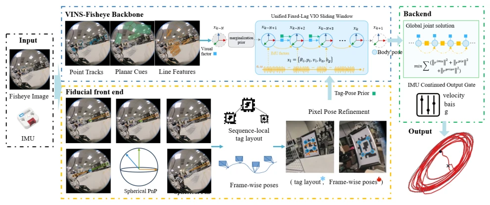
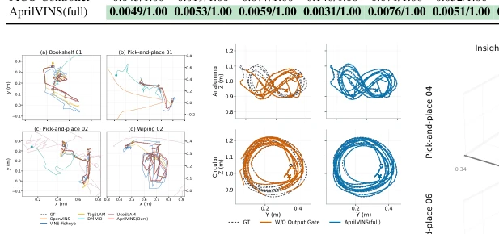
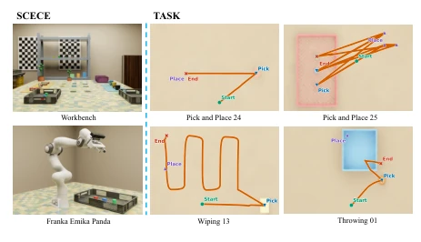
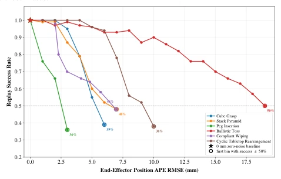
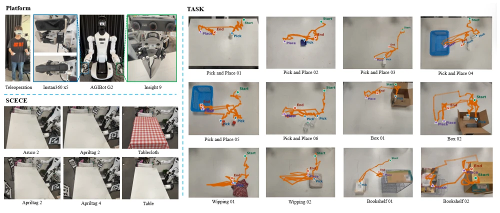
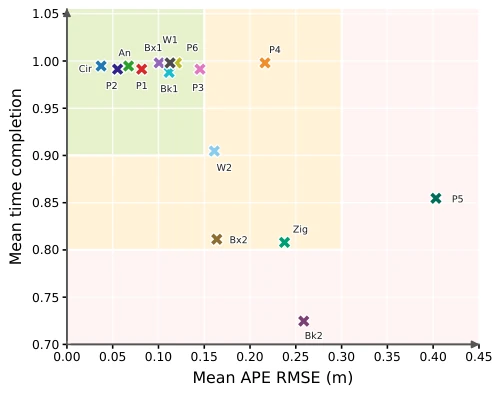
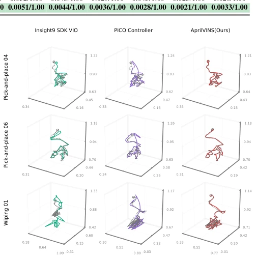

Fig. 1. Representative MILD recordings from Insta360 X5 (fisheye), Insight9 (stereo/RGB-D), and MILD-Sim (simulated fisheye) across pick-and-place, wiping, and rearrangement tasks. The montage shows the multi-sensor, cross-domain coverage of the benchmark.
方法Method
AprilVINS 采用鱼眼视觉惯性里程计（VIO）作为骨干，结合 AprilTag 辅助。首先，前端在线估计序列局部的 AprilTag 几何布局，无需预先测绘地图，利用已知 ID 和尺寸进行球形 PnP。其次，将验证通过的 Tag 位姿先验插入固定滞后滑动窗口优化中，与视觉惯性因子联合优化。核心创新在于“准入”与“导出”分离：Tag 先验需通过几何、时间戳和 SE(3) 一致性检查才准入优化，防止错误标记污染状态；优化后的状态需经过“受保护延续”规则（guarded continuation）过滤，确保导出的轨迹片段稳定且连续，若优化失败则不导出，避免碎片化。该框架兼容鱼眼畸变模型，避免针孔近似误差，确保广角视野下标记测量的一致性。最后，通过 TCP 链转换输出机器人末端轨迹，并分离精度与可导出性评估。
—

Fig. 4. AprilVINS pipeline. Fisheye images and IMU feed a VINS-Fisheye backbone with point, plane, and line features in a fixed-lag sliding window. A parallel fiducial front end detects AprilTags, estimates sequence-local tag layout via spherical PnP, and supplies admitted tag-pose priors to the window. Guarded continuation then filters the jointly optimized body state before TCP conversion.

Fig. 6. AprilVINS ablation visualizations. Left: local trajectory compar- isons on four MILD tasks; dashed curves are executed TCP references and solid curves are estimates. Right: output-gate continuity check in the YZ plane; curves split at timestamp gaps larger than 0.15 s.
实验Experiments
构建 MILD 数据集，含 86 条真实序列（Insta360 X5/Insight9）及仿真集。对比 VINS-Fisheye、ORB-SLAM3、TagSLAM 等基线。指标包括 APE RMSE、时间完成率和连续性。结果显示，无 Tag 的 VIO 误差在厘米级，AprilVINS(full) 达毫米级（2-10mm）。消融实验表明 Tag 因子提升精度，输出门控提升连续性。MILD-Sim 重放研究量化了任务容忍度（如插入需<3mm），验证了定位误差对任务的影响，为 UMI 教学提供了可量化的诊断依据。
—

Fig. 3. MILD-Sim overview. Scene: Isaac Sim workbench and Franka ma- nipulation setup. Task: representative pick-and-place, wiping, and throwing trajectories with executed end-effector paths.

Fig. 8. Replay success versus translational APE–RMSE on six MILD-Sim tasks. Dashed lines mark the zero-noise baseline and the first bin at or below 50% success; error bars show Wilson 95% confidence intervals.
其他图片Other Figures

Fig. 2. MILD acquisition overview. Platform: AGIbot G2 with Insta360 X5 and Insight9 under teleoperation. Scene: plain tabletop, tablecloth, and ArUco/AprilTag marker layouts. Task: 15 tabletop families with executed TCP references; orange curves show trajectories and green/blue/red markers denote start, pick/place, and end events.

Fig. 5. Task-difficulty map from non-AprilVINS baselines. Points show the mean APE RMSE and mean time completion of the three lowest-RMSE evaluable routes per task.

Fig. 7. 3D practical-route trajectory comparisons for three Table V tasks. Dashed curves are route-specific executed references; solid curves are estimates.